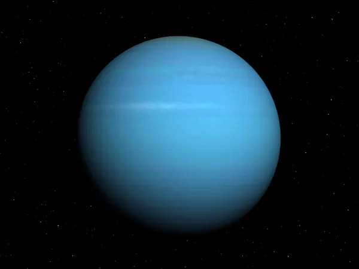

Urano
Introdução
Urano é o sétimo planeta a partir do Sol e foi o primeiro a ser descoberto por meio de um telescópio na era moderna, por William Herschel em 1781. É classificado como um gigante de gelo devido à sua composição interna rica em voláteis congelados.
Características Físicas
Urano possui uma cor azul-esverdeada pálida e uma característica astronómica única: o seu eixo de rotação é inclinado quase 98 graus em relação ao seu plano orbital. Isso faz com que o planeta orbite praticamente "deitado", fazendo com que os seus polos passem décadas alternados sob luz solar direta ou escuridão total.

Atmosfera
A sua atmosfera é composta por hidrogénio e hélio, mas contém uma quantidade significativa de metano (CH₄). É precisamente o metano que absorve a luz vermelha e reflete os tons azulados característicos do planeta. Urano detém o recorde de atmosfera planetária mais fria do Sistema Solar, caindo a -224 °C.
Exploração Espacial
Até hoje, a sonda Voyager 2 da NASA foi a única nave robótica a visitar Urano, num sobrevoo realizado em janeiro de 1986. A sonda enviou milhares de fotografias científicas, descobriu 10 novas luas e analisou o estranho sistema de anéis verticais e desalinhados do gigante de gelo.
Dados Comparativos
- Diâmetro: 50.724 km
- Massa: 14,5 massas terrestres
- Gravidade: 8,69 m/s²
- Dia (Rotação): 17h 14m
- Luas: 28 conhecidas (incluindo Titânia e Oberon)
Citação Científica
"A extrema inclinação de Urano desafia os nossos modelos clássicos de formação e colisões no Sistema Solar primordial."